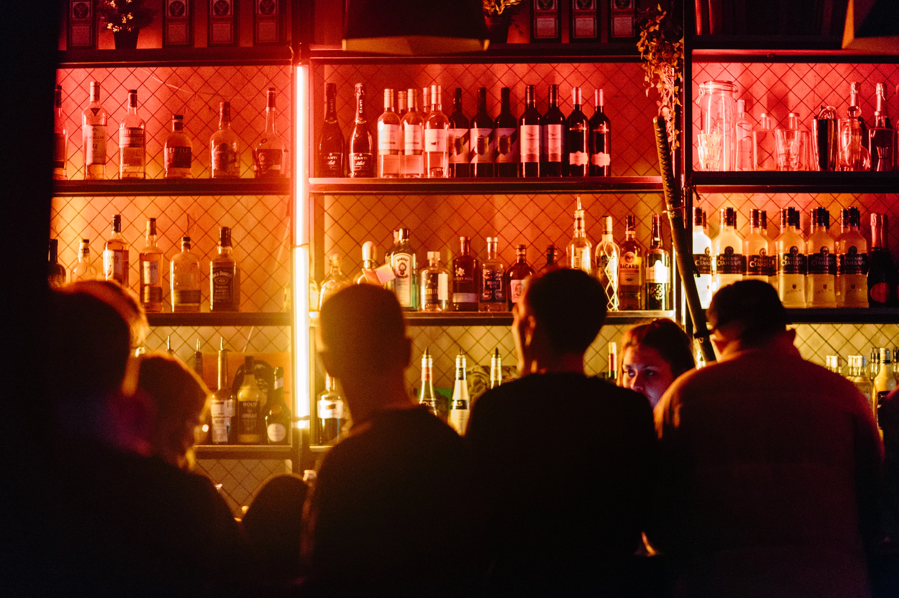
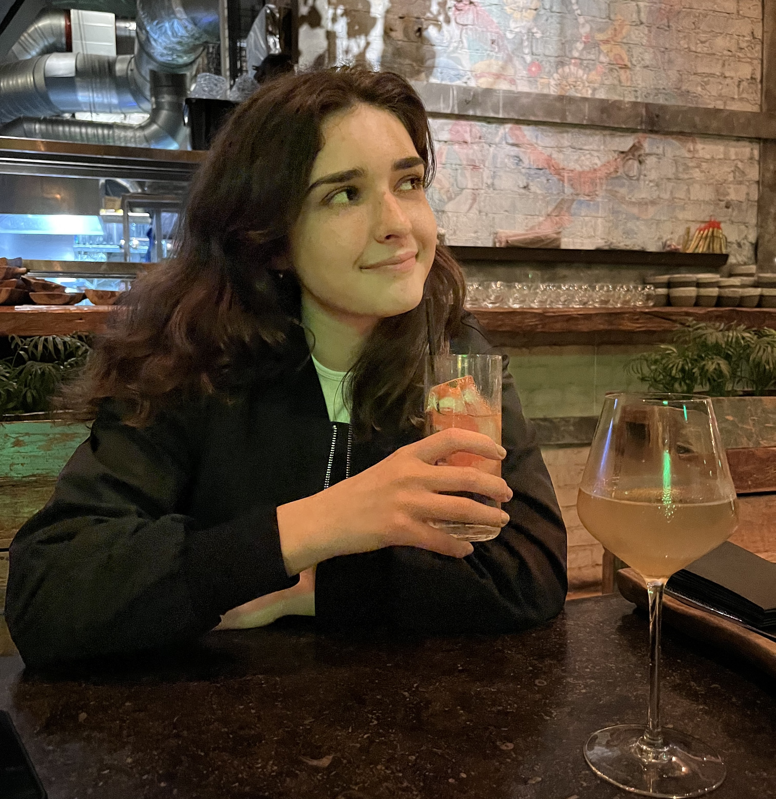
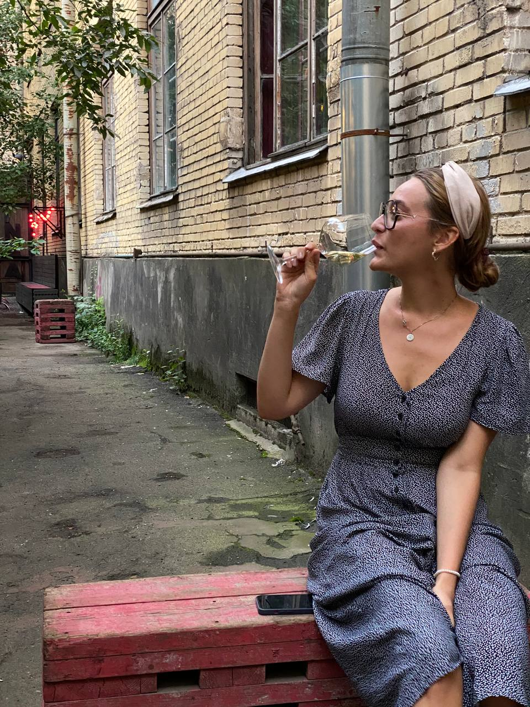
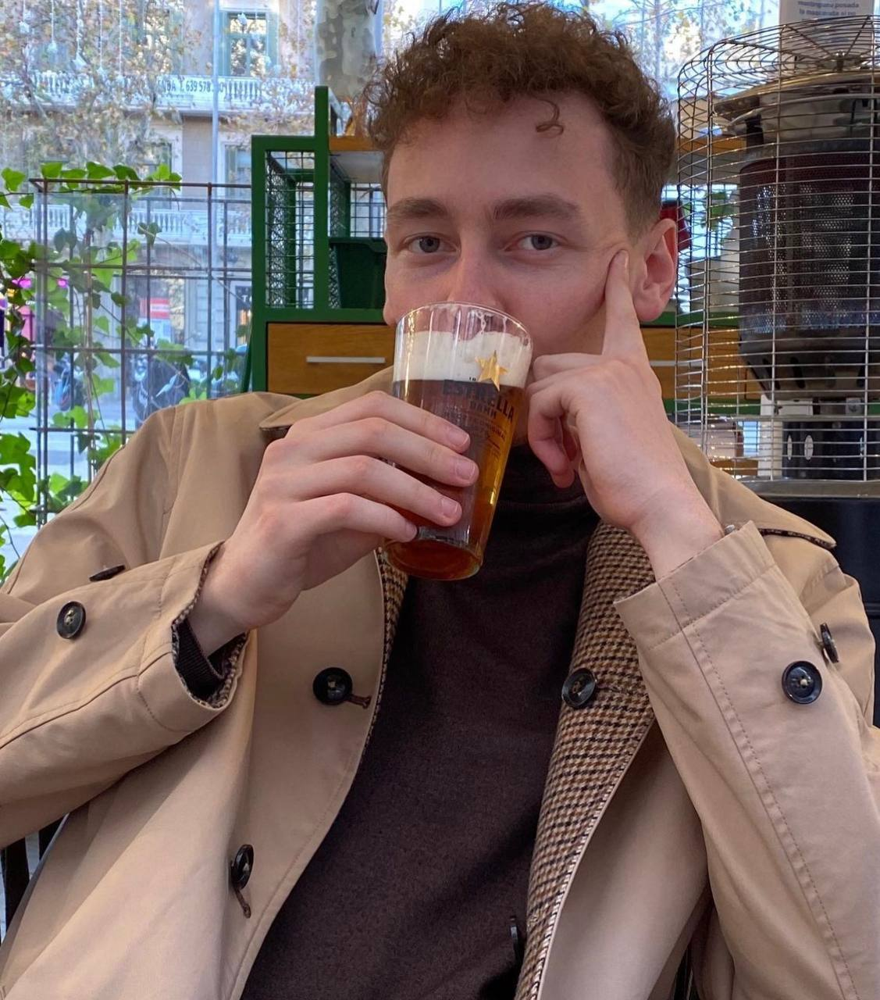

Meine Route
Проект про людей, бары и культуру Петербурга.
что будете пить сегодня?
Что за проект?
Мы хотим рассказать про Петербург, но не говоря про город. Мы будем говорить про барную культуру города через жителей. Нас спросили: «что такое Петербург?» мы сказали: «Это люди и бары». Так родилась эта история.
-
Аня Евтодиева
Студентка, 23 год, живет в Санкт-Петербурге 3 года
Аннушка пролила масло, а я захожу за классными коктейлями в «Мастер и Маргариту». Сам Булгаков бы не устоял.
Бар с видом на Ботанический сад собрал в себя все самое лучшее — суперскую пиццу, обалденные коктейли, огромный выбор крафтового пива.
У нас с друзьями есть любимый столик. Тот, который рядом с бильярдным столом. Приходя туда, стоит начать с пива. Спросите у официанта, какое у него любимое. Так вы никогда не ошибетесь в выборе. И возьмите трюфельную пиццу с дополнительным бальзамическим соусом. А дальше советую коктейль Basil Smash. Что-то такое летнее с нотками базилика. Будто выходишь в сад (или огород…) рано-рано утром. Воздух еще прохладный, но солнышко уже греет.
Предупреждаю, место вызывает привыкание. Идеально для пятничной посиделки с друзьями после работы/учёбы.
-
Арина Никифорова
Студентка, 23 года, живет в Санкт-Петербурге всю жизнь
Все дороги у меня ведут на Некрасова. Маршрут обычно (вообще всегда) такой. Сначала мы с друзьями идем в Базин. Очень недооцененное место! За барной стойкой частенько сидит дедушка и пишет что-то в своем планшете. Мне нравится представлять, что это Хемингуэй. Только такая, Некрасовская версия. Из попробовать MUST в Базине: Тортилья с курицей в кисло-сладком соусе и волшебная стопка кизлярки.
Следующая остановка — Mapuche. Я там обычно танцую до состояния «ног не чувствую», потому что это латиноамериканский бар! В одной руке Маргарита, в другой руке суперский тар-тар. А ноги в это время выплясывают сальсу. Обожаю-обожаю-обожаю!
-
Глеб Шипачев
Студент, 23 года, живет в Петербурге всю жизнь
Я очень люблю Петербург за то, что в дворах-колодцах может быть скрыто вообще все, что угодно. Например, мой любимый бар Утопист.
Представьте, лето, Петербург, белые ночи. Идете вы по Ковенскому переулку в центре города и решаете завернуть во двор дома 14. А там еще в один двор, где перед вами открывается бар. Еще раз. Двор-двор-бар.
Вы садитесь за столик на улице, официант приносит вам меню. Но вы знаете, зачем пришли сюда.
— Мне паштет из куриной печени с хлебом и ковенский спртиц
Хлеб они заказывают в Подписных Изданиях, книжный, который в 15-ти минутах ходьбы. Коктейль — их разработка. Особенный спритц. Очень вам рекомендую!
Хотите, чтобы наши рассказчики составили вам компанию в баре?
Мы сделали бота, который поможет вам развлечься в баре, даж если вы пришли туда одни. Например, ты пришел в Севкабель! И куда мне идти? Ты тыкаешь на кнопку в телеграм-боте «Я рядом». И он выдает тебе варианты поблизости. Вот ты уже заходишь в бар. Нажимаешь кнопку «Я здесь». Тебя просят достать наушники. В этот момент ты погружаешься в историю. «Привет! Меня зовут Дима. Советую тебе взять Маргариту, она здесь особенная. Хочешь, расскажу историю, которая произошла со мной, когда я пил здесь Маргариту?»